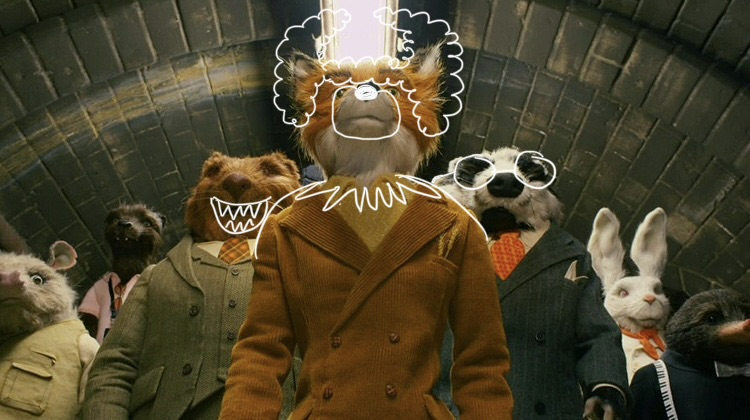
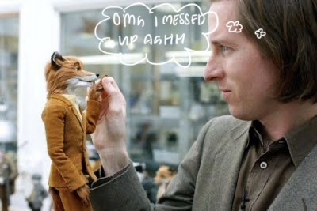
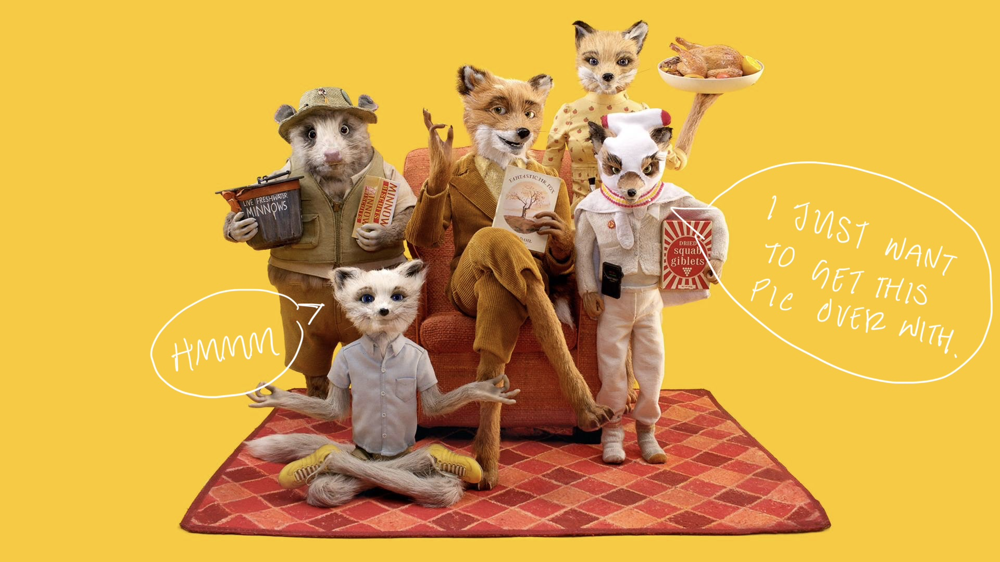

Fantastic Mr.Fox






Fantastic Mr. Fox is about a clever and slightly rebellious fox named Mr. Fox who can’t resist returning to his old habit of stealing from three wealthy farmers. Even though he promises his family a safer, quieter life, his instincts pull him back into trouble, which puts not only his family but his entire animal community at risk. As the farmers retaliate, Mr. Fox has to use his intelligence and creativity to protect everyone and make things right. I like this movie because the scenes are very sceneic in the sense that each scene has its own quality of uniqueness. Mr. Fox speaks in some scenes as a wise man like if there are hints of advice towards life during his dialogue. They focus a lot on one character by doing many close ups which gives a creepy feeling but the detail of the character is fascinating to me. I appreciate this movie more by its meaning behind the storyline and being intertwined by an animation that captures the eye.
Wes Anderson